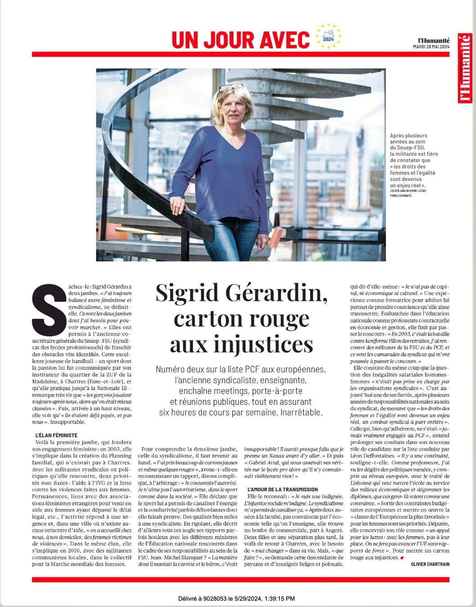

Publication relayée par le PCF 79
Européennes. Le PCF présente la candidature de Sigrid Gérardin
Date de mise à jour indiquée par Facebook · 4 juin 2024
Texte de la publication · PCF national
Elle est la n°2 sur la liste de la Gauche Unie pour le monde du travail aux côtés de Léon Deffontaines, Sigrid Gérardin est une combattante infatigable pour les services publics et l'égalité femmes-hommes.
Découvrez son portrait dans l'Humanité.
Sigrid Gerardin

Sources
PCF national · publication relayée par le PCF 79 · bibliothèque Facebook · AR-0002-FB-01367
À lire aussi · Sigrid Gérardin défend les services publics dans une vidéo de campagne